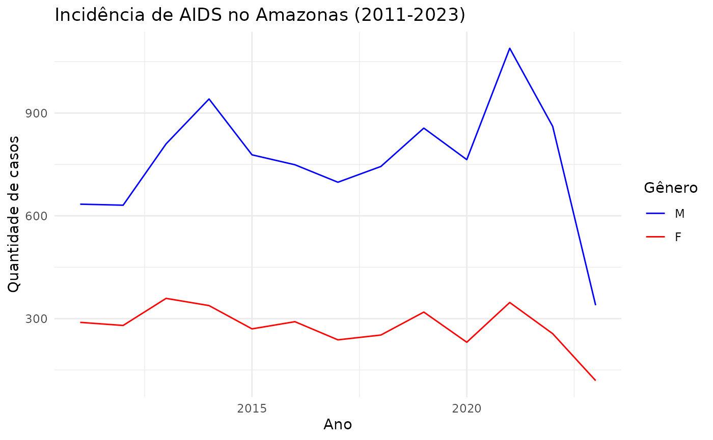

aids_amazonas
aids_amazonas.RmdUma base de dados de ocorrências de AIDS de 2011 a 2023 no Amazonas.
Descrição
Essa base de dados possui registros das ocorrências de AIDS de 2011 a 2023 em cada município do Amazonas.
Fonte
BRASIL. Ministério da Saúde. Departamento de HIV, Aids, Tuberculose, Hepatites Virais e Infecções Sexualmente Transmissíveis. Indicadores HIV, Aids. Available in: https://indicadores.aids.gov.br/.
Exemplos
require(dplyr)
require(ggplot2)
require(amazonasdatahub)
# Filtrando por município e agrupando por gênero
aids_amazonas %>%
filter(name_muni == "Manaus") %>%
group_by(gender) %>%
ggplot(aes(x = year, y = cases, group = gender, color = gender)) +
geom_line() +
scale_color_manual(values = c("blue", "red")) +
theme_minimal() +
labs(
title = "Incidência de AIDS no Amazonas (2011-2023)",
x = "Ano",
y = "Quantidade de casos",
color = "Gênero"
)